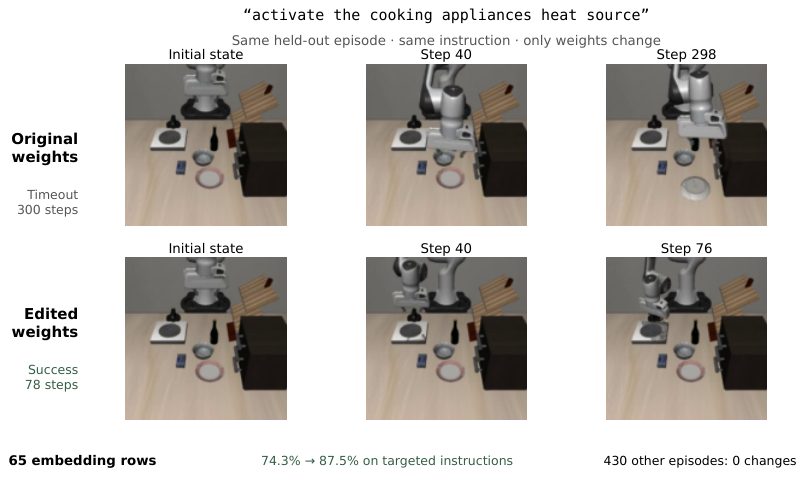
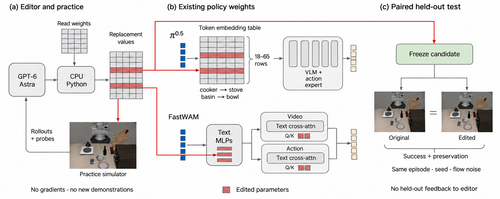

Can LLMs Debug Robots by Editing Their Weights?
1. 背景信息
- 作者与机构：Jusheng Zhang（Stanford University），Keze Wang、Liang Lin（X-Era AI）。
- 版本：2026-11-06，arXiv:2611.09376v1；按预印本正文与附录阅读，未见会议录用信息。
- 材料：论文全文｜作者解读｜代码与实验记录。v1 正文还写公共链接待发布；截至 2026-11-13，官方仓库已公开首版代码、65 行编辑、16 个会话记录及证据，实机实验仍在进行中。
核心判断：LLM 确实找到了有效的机器人权重修复，但最强结果是很具体的词汇到任务的重新映射。GPT-6 Astra 修改 π0.5 的 65 行 token embedding，在 765 条 held-out 改写指令上将成功率从 86.3% 提至 92.0%。真正有辨识度的证据是：收益全部落在读取这些行的指令里，而简单使用它发现的词表直接替换 embedding，也能解释大部分提升。[§3；Table 1–3]
2. 关键问题：能开炉灶，却听不懂炉灶的另一种说法
论文的真实指令是：
activate the cooking appliances heat source
它要求打开炉灶。原策略却拿起盘子，300 步后超时；改权重后，同场景、同指令、同 seed 的运行在第 78 步完成任务。模型本来就会执行规范炉灶指令，失败点出现在描述性词语与任务行为之间的对应关系。[Fig. 1；§3.1]

原文 Fig. 1，来源：arXiv v1 原图。上排拿盘子，下排操作炉灶旋钮；最后保存的画面是 298/76 步，终止判定为 300/78 步。下方 74.3%→87.5% 是全部 335 条命中编辑 token 的指令统计，不是这一个案例的成功率。

这不要求那些词对预训练语言模型完全陌生。问题是它们在当前策略中没有稳定地调用熟悉的机器人任务。作者也发现 action expert 可以关注语言，却仍执行错误任务：有 attention，不等于任务含义已经正确传到动作端。[§3.1]
3. 关键方法：Agent 找映射，词嵌入表保存修复
3.1 Agent 实际获得什么工具？
GPT-6 Astra 能读取原始权重、张量名称和维度、tokenizer，并在持久 CPU Python 工作区做线性代数、保存替换张量。独立的 forward 工具提供仿真 rollout 和固定输入 replay，可返回动作与激活。协议禁止梯度更新、训练循环、迭代 loss fitting，也禁止在 CPU 工作区自行执行目标网络。[§2]
每个语言修复会话有 50 次 forward 请求；请求可以包含一批 episode 或多个 replay，不能理解为只用 50 条数据或只前向 50 次。Agent 在 practice 数据上诊断、提候选、验证并决定保留或撤销，冻结后才由作者在未暴露的 held-out 集评分。

原文 Fig. 2，来源：arXiv v1 原图。上支路是成功的词嵌入编辑；下支路是 FastWAM 的另一次探索。作者说明这是生成的方法示意图，内嵌相机图用于说明流程；不能把下支路当作同等成功的实验，也不能将此图当作 rollout 证据。

3.2 炉灶案例如何变成权重变化？
Agent 从失败表述中识别出词语线索，将其 token embedding 拉向策略熟悉的任务词。C 会话的部分实际配方如下；下划线表示 SentencePiece 词首边界。[Appendix F，Table S9]
| 来源 token | 目标 token / 目标均值 | 强度 $\alpha$ |
|---|---|---|
_activate |
_turn |
0.75 |
_cooking |
_stove |
0.75 |
_cooker |
_stove |
1.00 |
_basin |
_bowl |
1.00 |
_fermented |
_wine |
1.00 |
_dairy |
_cheese、_milk、_butter 的均值 |
0.50 |
具体更新为：
原指令字符串不变，tokenizer 仍读到原 token ID，但查出的向量更接近相应任务锚点；后续 VLM 和 action expert 都按原计算图运行。$\alpha=1$ 是完整替换，较小的值保留部分原向量；多目标均值用于避免把 dairy 这类词强行压到唯一物体。[Eq. 1]
三个会话都保护规范任务指令中出现的 token ID，只改其他选定行。最强的 C 改了 65 行、132,768 个实际存储标量，占导出 checkpoint 的 0.00367%。词表为 $257152\times2048$；65 行的容量是 133,120 个标量，实际变化数较少是因为部分元素舍入后相等。它不是只改 65 个权重。[§3.3；Appendix A]
3.3 为什么能保证部分输入不受影响？
设被改行集合为 $S$，输入指令的 token ID 集合为 $I(c)$。在本文执行路径上：
其中 $o$ 为观测，$V(o)$ 为视觉输入的编码，$z$ 为固定的 flow 噪声，$\vartheta$ 表示其余未编辑参数。
如果 $I(c)\cap S=\varnothing$，那么模型根本没有读到被改的行；在相同观测、噪声和确定性执行下，动作块严格相同。这是由查表结构得到的局部性，不需要假设两个词“语义无关”。[Eq. 2；Table 2]
保证只覆盖不命中这些行的输入。 某个新场景仍然使用 _fermented 时，它也会被拉向 wine；模型不会因为语境变了就自动关闭编辑。固定输入相同也不等于两个独立渲染的仿真过程数值完全相同；论文同时记录了极小的图像变化与闭环结果差异，因此不能把这些差异直接归因于词嵌入编辑。[§3.3；Appendix A]
4. 数据与评估：三次独立搜索，共用一个 held-out 环境条件
主模型是 OpenPI 发布的 pi05_libero，导出参数约 3.62B，包含 SigLIP、PaliGemma 风格 VLM 和 flow-matching action expert；这是已有 LIBERO 适配的 checkpoint，与另一篇使用的 DROID 零样本 checkpoint 不同。每次生成 10 个未来动作，执行 5 个后重规划，使用 10 次去噪；该配置不把离散机器人状态写进语言 prefix。[§2–3；Appendix A]
practice/held-out 按 suite 与 variant ID 的 SHA-256 奇偶划分。编辑器可见 4,986 个跨扰动类别的 practice variants；三次语言搜索各自从同一原始 checkpoint 开始，不继承彼此编辑。每个冻结候选最终评估 765 个 held-out Language Instructions variants，另评估其他六类扰动的 360 个 episode。[§2]
主 held-out 统一使用 seed 7。因此“三次独立”指三次搜索，不是三个独立数据集，也不是三个独立环境种子。模型已经接受过示范训练，Agent 又使用仿真反馈；准确说法是本研究不增加梯度训练或新专家示范，不能称为完全 data-free。
5. 关键结果：收益来自词义方向，额外优化的优势仍未确定
5.1 能否再次找到有效编辑，收益落在哪里？
| 会话 | 编辑行数 | 成功数 / 765 | 修复 / 退化 | 相对原模型 exact $p$ |
|---|---|---|---|---|
| 原模型 | 0 | 660（86.3%） | — | — |
| A | 18 | 684（89.4%） | 32 / 8 | $1.82\times10^{-4}$ |
| B | 20 | 673（88.0%） | 18 / 5 | 0.0106 |
| C | 65 | 704（92.0%） | 48 / 4 | $1.31\times10^{-10}$ |
来源：Table 1。将三项主比较作为一个检验组进行 Holm 校正后仍显著；这项校正没有覆盖整篇所有探索性检验。
C 的净提升为 44/765，即 5.75 个百分点，配对 95% 区间 [3.95, 7.55]。其中 335 条指令读取被改的 token，成功数 249→293（74.3%→87.5%）；其余 430 条逐例成功/失败结果全部不变。A/B 的结果变化也全部局限于各自命中编辑 token 的子集。[Table 2]
描述替代物体/动作名称的 level 5 贡献了 44 个净修复中的 32 个。它说明收益集中于特定语言困难，不能外推成所有语言理解能力均匀变强。[Fig. 3]
5.2 是方向有效，还是只要动这些权重就有效？
| 同一批 765 条指令 | 成功率 | 修复 / 退化 |
|---|---|---|
| 原模型 | 86.3% | — |
| 同 65 行、匹配范数的随机方向 | 85.2% | 7 / 15 |
| 按 C 找到的目标全部直接替换 | 90.5% | 43 / 11 |
| C 的插值 / 混合配方 | 92.0% | 48 / 4 |
来源：Table 3。主表将 2 个直接替换、3 个随机对照运行错误计为失败；仅保留有效 pair 的敏感性分析不改变结论。
随机方向没有收益，说明编辑方向有信息。但直接替换已经解释了大部分提升。C 与直接替换在 763 个共同有效 pair 上是 20 胜、9 负，$p=0.0614$；不能宣布插值策略显著优于直接替换。
这个“词典基线”继承了 Agent 找到的来源词、目标词与均值组合，所以它没有独立承担词表发现的成本。更准确的贡献是 LLM 从 rollout、探针与权重中发现可用映射；其精细配方比简单替换多带来多少价值，统计证据尚不充分。随机对照也只有一个具体随机实现。[§3.4]
5.3 动作对齐是否支持机制解释？
作者额外审计的是 B 会话的固定输入 replay，不是 C 的完整电路。对 7 条描述性指令，比较动作块到规范任务指令动作的距离，除以未编辑时的距离，再取中位数 $\rho$：[§3.5；Table 4]
| 干预 | 距离比 $\rho$ |
|---|---|
| 原模型 | 1.000 |
| 仅改变 embedding 范数 | 1.004 |
| 仅改变方向 | 0.340 |
| 最终 B 编辑 | 0.367 |
方向变化明显把动作拉向任务锚点；只改范数几乎无效。这比“语言 attention 增加”更直接。不过，cooktop 单例中最终 VLM 语言残差到锚点的距离反而增至原来的 3.165 倍，action expert 的三个测量层却都更接近锚点。动作有效对齐，并不要求每层表示都更像规范 prompt。[§3.5]
5.4 泛化与失败记录：哪些限制会改变判断？
首先，早先的 200 条 held-out 小样本上，C 仅从 181/200 到 185/200，$p=0.289$。之后评估的是原划分中全部 765 条语言样本，候选没有修改、也没有筛选有利条目，但不能把它称为预注册的独立复现。B 在额外 practice 多种子验证中也有一个 seed 净损失 2 次，尚缺跨 held-out seeds 的系统验证。[§2、§3.6；Table S1]
其次，其他 13 个机器人编辑会话中，12 个最终拒绝候选，唯一保留者 held-out $p=0.542$。有两个已拒绝、但仍存档的候选在事后评估中呈现名义正收益，不能笼统说“其他所有编辑完全无效”；也不能把“12 次拒绝”当成 Agent 判断可修复性的准确率。[Table 6]
失败恢复任务尤其有启发：一个干预把空抓后的重开夹爪比例从 5% 提到 15%，配对 practice 成功数却从 213/352 降到 208/352。能够改变一个与失败有关的信号，不等于改变了决定任务成功的原因。[§4]
论文另有一个独立的输入接口结果：添加 benchmark 场景元数据后，FastWAM 在 210 个配对样本上从 147 次成功降至 102 次（70.0%→48.6%）；π0.5 两种格式均为 186/210，但有 9 胜、9 负的逐例变化。针对元数据的权重修复没有形成重复确认的成功案例，因此这应当记作输入格式敏感性发现，而非另一个成功编辑结果。[§5]
6. Insights
6.1 稀疏编辑提供的最强保证来自结构，而非语义距离
本文能证明未读改动行的固定输入完全不变，是因为嵌入查表具有明确的访问范围。它比在一小组任务上观察“没有显著下降”更强，也比“编辑范数很小所以影响很小”更可靠。但同词不同义仍全部命中，保障范围在 token ID 处结束。[基于 Eq. 2 的判断]
我会用 _fermented、_round 等编辑构造同 token、不同目标含义的对照，检查它是否把任何发酵物都偏向 wine、把任何圆形物都偏向 bowl；再测试上下文门控能否保留收益、减少误调用。这是针对本文配方的后续实验设想，论文没有报告这些结果。
6.2 机制干预应该帮助找出最小有效变化
方向/范数对照和固定输入 replay 已经说明“哪些变化有效”，但尚未解释从某行 embedding 到动作选择的完整因果路径。可以从一个修复、一条退化指令开始逐行撤销编辑，再对关键层做 patching，检查修复是否共享某条任务选择通路。这样能把当前的词表工程进一步推进为可检验的机制解释。[研究设想]
6.3 与逐层指令蒸馏互补，但不能直接比较成功率
| 比较维度 | 本文 | Distilling Instructions into Weights |
|---|---|---|
| 已验证的错误 | 描述性词汇触发错误任务 | 复合指令中物体与目的地绑定错误 |
| 编辑信号 | Agent 找到的词汇—任务锚点对应 | 同一观测下有效/无效说法的逐层差值 |
| 写入位置 | 词嵌入表的 65 行 | VLM 多层 MLP down-projection |
| 保留依据 | 不读改动 token 时固定输入严格不变 | 有限任务上的回归评估 |
| 主评估变化轴 | 同一 seed，未见语言 variants | 同一任务，未见 simulator seeds |
| 策略与环境 | pi05_libero，LIBERO 系列 | pi05 DROID，RoboLab |
两篇共同指向“重新调用已存在的能力”，但覆盖的是不同语言失效与不同泛化维度。我认为值得补上的实验是把两类错误放进同一 checkpoint、同一环境，交叉比较稀疏词表修复和逐层蒸馏；目前没有证据表明其中一种普遍优于另一种。
7. 连接与发现
- MOC-VLA — 机器人任务词汇、策略适配与语言鲁棒性。
- MOC-Interpretability — 结构性局部保证、方向对照，以及内部信号改变与任务改善的区别。
- Distilling-Instructions-into-Weights-Closed-Form-Edits-Fix-a-Robot-Policys-Misreading-闭式指令蒸馏 — 用有效改写的内部状态作为教师，修复关系绑定；与本文属于不同团队的两项研究。